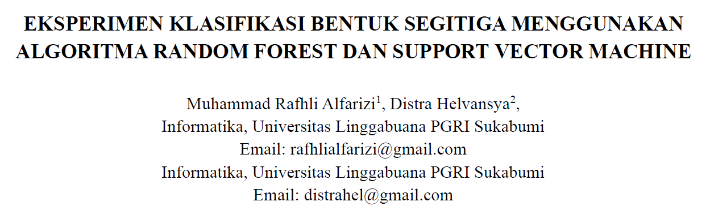

Artikel & Jurnal
Kumpulan tulisan saya, baik berupa jurnal maupun artikel.
Jurnal Terbaru

Eksperimen Klasifikasi Bentuk Segitiga Menggunakan Algoritma Random Forest dan Support Vector Machine
Jurnal ini membandingkan algoritma Random Forest dan Support Vector Machine (SVM) untuk klasifikasi bentuk segitiga berdasarkan panjang sisi.
20 Sept 2025
Artikel Terbaru

Cyber Security: Pengertian, Jenis, dan Ancamannya
Pentingnya cyber security menjadi hal yang dipahami untuk melindungi sistem, jaringan, dan program dari serangan digital
10 Sept 2025